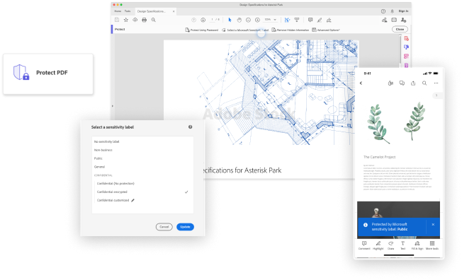

Lead design from ideation to implementation across Acrobat services. 200+ new enterprise users since private release with a potential of 60 million + seats for Acrobat.

PDF is the world's most popular business document format. It's also the most common file types stored in SharePoint and One drive. And in many cases PDF files contains sensitive information. Partner with Microsoft, this integrated experience brings the same classification, labeling and protection from Microsoft office files to Acrobat. The experience was later nominated as “Security ISV of the year” by Microsoft in 2023
More at Adobe blog🎨 Lead Designer
⏱️ Launched 2023
📄 Enterprise customers
Lead the design from ideation, iteration to implementation, worked with internal and external stakeholders, across Acrobat desktop to mobile, new and classic UX framework.
Problem & use case
As the most common file types stored in SharePoint and Onedrive, PDF is not covered in MPIP protection, leaves a broken workflow to enterprise users.
😵💫
"My company has MPIP protection for my word files, but I have to use another tool to make sure the encryptions are there with my PDFs."
Business opportunity
As the most common file types stored in SharePoint and Onedrive, PDF is not covered in MPIP protection, leaves a broken workflow to enterprise users.
🚧
With 80% of PDF open outside of Acrobat, this is a strategic move for Acrobat tap into Microsoft's knowledge workers.
What's MPIP
Microsoft Purview Information Protection (MPIP) is a Microsoft rights management solution that enables a rights-based access to assets including PDF documents.
Visit Microsoft Security for more detailsDesign touchpoints
After rounds of ideation with cross parnter teams, we decide to design the entry point of this experience under Protect PDF tool, where Acrobat users usually go when they have any data/file security needs.

After logging in, entitled users will be able to locate the MPIP option along with other PDF protection options we offer within Acrobat.


As most of our enterprise users are already familiar with MPIP workflow within Microsoft ecosystem, within Acrobat, we landed on an experience that is familiar but refresh to Acrobat users.
Design walkthrough
When we start to audit the current experience within Microsoft products and talk to Acrobat users, the current experience felt outdated and very permission centric, instead of user driven. After working with cross team to layer out the detailed workflows, I redesigned a refreshed experience to better suit Acrobat users with a modern look and feel.


Scalable solution
To better understand how this experience would carry over to smaller screens, I provided an experience framework/vision early on to initiate this conversation. Different use cases were considered as a document's reader, commentor, owner and co-editor. We also went though multiple rounds of design iterations to make sure integration features are logically and visually seperated from the native experience.

Design localization
As PDFs tend to be archived for an extended time frame, one use case we considered is that when a label was auto-applied or when the browser no longer support this MPIP label, how might we help users to get timely support and know what to do next. To bridge this gap, I collaborated with localization team and provided detailed specs on how would this expeirence be localized in multiple languages.

Illurstration credit: tatianastulbo

Unique challenge
How to design and lead for a good partnership experience? We started with a dated experience, which has been out for a while with enterprise customers, and also need to work with different engineer, product teams, etc for difference platforms. After going through rounds of iterations. This experience was succesfully launched during Microsoft Ignite 2022 and continued to be improved until today.
Have a rationalized design POV
Designing for partnership experience often means double sized constraints: user expectations, feasibility, timeline from both products, hence it's important for the lead designer to have a solid POV based on our understanding of users and limitations. I really enjoyed the iterative process to collaborate with engineer, product, marketing and customer support from both internally and externally to build a clean experience for users.
While designing for this project, our design team is also working on a complete revamp of the Acrobat experience, to make sure this project could be scalable in this moment of transition, I worked closely with multiple design teams to make sure all the touch points, components and workflow will be scalable in both classic and modern frameworks.
We started this whole project with a quick sync up when the product team was still drafting out the roadmaps. As we dive deeper, I started to engage more stakeholders to this conversation to align on the overall experience and release strategy. Later in the process, as we had 3 phases of releases, I managed to incorportate more feedbacks from our customers to make sure the E2E experience always reflects customers' needs.